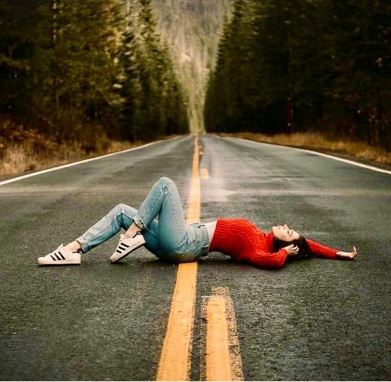

Consejos para fotografias memorables

- Ten paciencia y estar atento a los detalles.
- Busque un angulo diferente o una perspectiva inusual.
- Tome fotos en momentos especiales o emocionantes.
- Escuche las historias de sus sujetos y deje que las fotografias refleje esas historias.
- Utilice la luz natural.
- Aprenda sobre tecnicas.